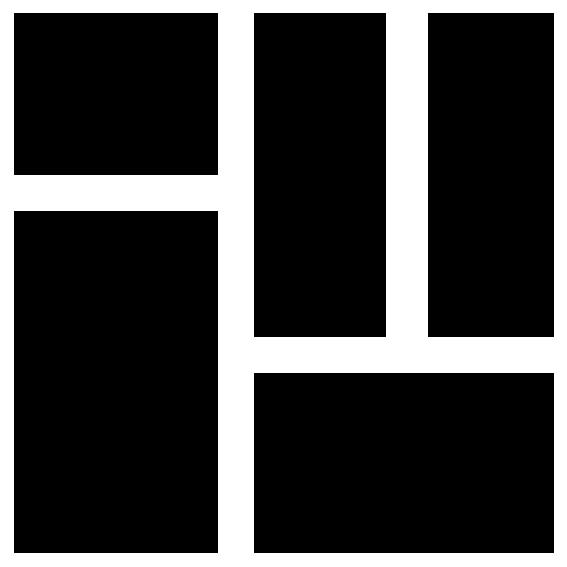

 PubAnnotation Map
Click any cell to zoom in, or the top facebook blue label to zoom out.
Cell
size
is proportional to the number of PubMed abstracts.
Different shades of
color
are related to the number of PubAnnotation
Zoomable Treemap